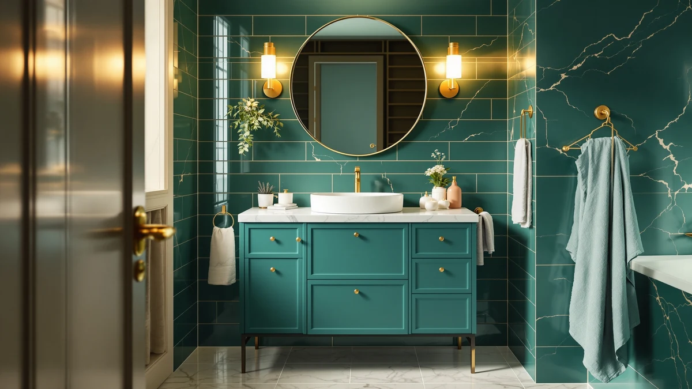

Best Bathroom Vanity for Small Spaces (2026)
Prices and picks verified as of August 2026. Independent, reader-supported reviews.


Quick Answer
After comparing seven vanities built for tight bathrooms on width, material, price, and verified owner reviews, the Yaheetech 24.5 Inch Modern Bathroom is our top pick for the best bathroom vanity for small spaces, thanks to its 24.5-inch footprint, $149.99 price, and the largest review sample in this group. If your bathroom needs an even narrower cabinet, the 18-inch Malwee floating vanity further down is built for that.
Our pick: Yaheetech 24.5 Inch Modern Bathroom, $149.99 Check Price on Amazon
Bottom line: our top pick is the Yaheetech 24.5 Inch Modern Bathroom Vanity with Ceramic Basin at $149.99. The best budget option is the YOURLITE Makeup Vanity Table Set with 3 Modes Adjustable at $129.99.
Things to Know Before You Buy
- Measure your actual wall space first. Cabinet widths in this comparison span from 18 to 24.5 inches, and a difference of a few inches determines whether a vanity clears your toilet or door swing. Check our sizing guide before you buy.
- Floating vanities buy back floor space. Three of the seven picks here, the AmbroVania, Malwee, and Beingnext, mount to the wall instead of standing on the floor, which makes a small bathroom easier to clean and feel larger.
- MDF construction is standard at this price. All seven vanities use MDF or engineered wood cabinets rather than solid wood, so wiping up standing water near the base quickly matters more than it would with a moisture-resistant material.
- Review counts vary widely. The Yaheetech has 252 verified reviews behind its 4.4-star average, while the APRILSOUL has only 8, a gap worth weighing before you trust a rating at face value.
The best bathroom vanity for small spaces has to earn every inch of the wall it takes up, from cabinet width down to how far the sink bowl juts into the room.
We compared seven vanities built for tight bathrooms, ranging from an 18-inch floating cabinet to a 24.5-inch freestanding model, looking at material, price, and verified owner ratings pulled from hundreds of Amazon reviews. The Yaheetech 24.5 Inch Modern Bathroom came out ahead for most buyers: it pairs a full-size 24.5-inch footprint with a $149.99 price tag and a 4.4-star average across 252 reviews, the largest review sample in this group.
If your bathroom can't spare 24 inches, the Malwee 18 Inch Floating Bathroom mounts to the wall and frees up floor space that a freestanding cabinet would eat into. Buyers who want a higher-end floating design and don't mind a bigger budget should look at the AmbroVania 24-Inch Modern Floating Bathroom instead. Below, we break down what separates all seven picks, where each one falls short, and how to match cabinet width to a bathroom that doesn't have much to give.
Why You Should Trust Us
Ilane Tall covers home and bath products for Best Bathroom Vanities, where she researches vanities, cabinets, and bathroom remodel gear for a US audience. For this guide, she and the editorial team compared publicly listed specs, pricing, and verified buyer reviews for every vanity under consideration instead of relying on manufacturer marketing copy. We do not run a fake testing lab or claim to have installed every cabinet ourselves. Instead, we cross-reference dimensions, materials, and owner feedback so you can decide which of these seven compact vanities fits a bathroom that doesn't have room to spare.
How We Picked
To build this list of the best bathroom vanity for small spaces, we started with every vanity in our product database sized 24.5 inches or under, then added a small number of floating and narrow-footprint models that regularly come up in small-bathroom searches even when their listed width runs close to 24 inches. We prioritized models with documented materials, dimensions, and pricing, and we dropped listings that were missing that basic information since incomplete specs make a fair comparison impossible. We also made sure the final seven represent distinct configurations: floating versus freestanding, a narrow 18-inch cabinet versus a fuller 24.5-inch one, and a budget makeup-table alternative, rather than seven near-identical cabinets at different price points.
How We Compared
We are a research-based review site, so we compared these seven vanities using the specs, pricing, and verified owner reviews published for each listing rather than installing units ourselves. We lined up width, material, and price side by side to see which cabinets actually deliver a small footprint instead of just marketing themselves as compact, and we read through verified Amazon reviews to flag recurring praise or complaints about assembly, hardware, and finish quality. When a problem shows up repeatedly in the reviews, like a floating bracket that needs extra support or a rating built on a thin sample size, we call it out in that vanity's drawbacks below. That's the standard behind every comparison in this guide to the best bathroom vanity for small spaces: a published spec sheet plus a pattern in verified customer feedback, not a hands-on impression of the product.
Our Picks

Yaheetech 24.5 Inch Modern Bathroom
What we like
- At $149.99, it's the least expensive vanity in this comparison
- 252 verified reviews is the largest sample of any pick here, giving its 4.4-star average more weight
- 24.5-inch width fits most small bathrooms while still leaving room for a full-size sink basin
Flaws but not dealbreakers
- MDF cabinet construction means standing water near the base should be wiped up quickly
- Freestanding design takes up floor space that a floating vanity like the Malwee would free up
| Material | MDF / engineered wood |
| Size | 24.5 inch |
The Yaheetech 24.5 Inch Modern Bathroom is our top pick for the best bathroom vanity for small spaces because it delivers a near-standard 24.5-inch footprint at less than a third of what some floating alternatives in this comparison cost. Reviewers consistently note straightforward assembly and a finish that holds up in daily use, and the 252 verified reviews behind its 4.4-star average give that feedback more statistical weight than any other vanity on this list.
At $149.99, it also leaves the most room in the budget for a separate faucet or mirror upgrade, since the cabinet itself doesn't eat far into most small-bathroom budgets. It's an MDF build rather than solid wood or a moisture-resistant material, so owners report that keeping the base dry after showers extends its lifespan, a tradeoff shared by every MDF vanity in this comparison.

AmbroVania 24-Inch Modern Floating Bathroom
What we like
- Floating mount frees up floor space, which makes a small bathroom easier to clean and feel bigger
- 4.7-star average across 96 reviews is the second-highest rating in this comparison
- 24-inch width matches the Yaheetech while adding a wall-mounted, modern profile
Flaws but not dealbreakers
- At $483.99, it costs more than three times the Yaheetech for a comparable 24-inch footprint
- Floating installation typically requires wall studs or reinforced anchors, adding to setup cost
| Material | MDF / engineered wood |
| Size | 24 inch |
The AmbroVania 24-Inch Modern Floating Bathroom is the pick for buyers who want the visual and cleaning benefits of a floating vanity without dropping to the narrower 18-inch Malwee. At $483.99, it sits at the top of the price range in this comparison, and its 4.7-star average across 96 verified reviews suggests the extra cost tracks with a build quality owners are satisfied with.
Reviewers consistently point to the wall-mounted design as the reason they chose it over a freestanding cabinet, since it opens up sightlines in a small bathroom that a floor-standing vanity would block. The tradeoff is installation: floating vanities need secure wall anchoring, which can mean extra work or a professional install compared to a freestanding cabinet you simply set in place.

SUNTAGE 24 Inches Modern MDF
What we like
- $199.49 price sits comfortably between the budget Yaheetech and the premium AmbroVania
- Freestanding setup skips the wall-anchoring work a floating vanity requires
- 24-inch width matches standard small-bathroom footprints
Flaws but not dealbreakers
- 4.1-star average is the lowest rating among the 24-inch options in this comparison
- 67 verified reviews is a smaller sample than the Yaheetech or AmbroVania
| Material | MDF / engineered wood |
| Size | 24 inch |
The SUNTAGE 24 Inches Modern MDF fills the gap between the budget Yaheetech and the pricier floating options, offering a modern look and a standard 24-inch footprint without asking buyers to anchor a vanity to a wall stud. At $199.49, it's a straightforward middle-of-the-road choice for a small bathroom that doesn't call for a floating design.
Its 4.1-star average across 67 reviews is the lowest rating in this comparison, though it's still a solid score built on a reasonable sample size. Owners report the cabinet installs like a typical freestanding vanity, which is worth factoring in if you'd rather avoid the extra hardware and wall prep a floating model needs.

Malwee 18 Inch Floating Bathroom
What we like
- 18-inch width is the narrowest in this comparison, built for genuinely tight bathrooms
- 4.8-star average across 114 reviews is the highest rating of any vanity on this list
- Floating design frees up floor space in a bathroom that already has little to spare
Flaws but not dealbreakers
- 18-inch width limits counter and storage space compared to the 22- to 24.5-inch options here
- At $228.00, it costs more than the wider Yaheetech despite the smaller footprint
| Material | MDF / engineered wood |
| Size | 18 inch |
The Malwee 18 Inch Floating Bathroom is our pick for the smallest bathrooms in this comparison, the powder rooms and half baths where even the 22-inch Beingnext feels too wide. Its 4.8-star average across 114 verified reviews is the highest of any vanity we compared, a strong signal for a cabinet built to such a narrow footprint.
Reviewers consistently mention how much floor space the floating mount returns in a cramped layout, since there's no cabinet base blocking the corner near a toilet or shower door. The narrower 18-inch width does mean less counter space and a smaller sink basin than the 24-inch options here, a real tradeoff for buyers who need every bit of storage they can get.

APRILSOUL 24 Inch Bathroom Vanity
What we like
- 4.4-star average matches the Yaheetech's rating
- 24-inch width fits the same small-bathroom footprint as most of this comparison
- Modern styling gives buyers another design option beyond the SUNTAGE and Yaheetech
Flaws but not dealbreakers
- Only 8 verified reviews back its rating, the smallest sample of any vanity in this comparison
- At $249.99, it costs more than the Yaheetech, SUNTAGE, or Malwee without a larger review history to justify it
| Material | MDF / engineered wood |
| Size | 24 inch |
The APRILSOUL 24 Inch Bathroom Vanity matches the Yaheetech's 4.4-star rating and offers a similar 24-inch footprint, but with only 8 verified reviews behind that average, it's the least-proven pick in this comparison. That's not necessarily a red flag; newer listings simply haven't accumulated review volume yet, but it's worth weighing against a vanity like the Yaheetech that has 252 reviews backing the same score.
At $249.99, it costs more than the Yaheetech without the review history to confirm whether that price difference buys better hardware or a better finish. Buyers who like its styling and are comfortable being an early adopter on review volume will find a competent 24-inch cabinet here. Buyers who want a rating built on a larger sample should look to the Yaheetech or Malwee instead.

Beingnext 22" Small Floating Vanity
What we like
- 22-inch width splits the difference between the Malwee's 18 inches and the 24-inch cabinets in this comparison
- Floating design frees up floor space like the AmbroVania and Malwee
- 4.3-star average across 80 reviews is a solid, well-sampled rating
Flaws but not dealbreakers
- At $239.00, it costs more than the wider Yaheetech for a narrower cabinet
- The listed spec sheet doesn't include a documented depth measurement, so double-check clearance before buying
| Material | MDF / engineered wood |
| Size | — |
The Beingnext 22" Small Floating Vanity sits in the gap between the Malwee's 18-inch width and the 24-inch cabinets that make up most of this comparison, which makes it a fit for bathrooms where 18 inches feels too tight but 24 inches won't clear the door. Its 4.3-star average across 80 verified reviews is a solid, well-sampled score, on par with the SUNTAGE among the group.
Like the AmbroVania and Malwee, it mounts to the wall rather than standing on the floor, so it returns some floor space in a small bathroom even though it's not the narrowest option here. Our product database doesn't list a depth measurement for this cabinet, so measuring your own clearance before buying matters more here than it does for the fully specified vanities in this comparison.

YOURLITE Makeup Vanity Table Set
What we like
- At $129.99, it's the least expensive option in this entire comparison
- Doubles as a makeup table with mirror, useful for a small bathroom that also serves as a dressing area
- 24-inch footprint matches the majority of the vanities compared here
Flaws but not dealbreakers
- No published star rating or review count is available for this listing, so there's no verified feedback to weigh
- It's built as a makeup table rather than a plumbed bathroom cabinet, so it's not designed to house a sink or hold up to constant water exposure
| Material | MDF / engineered wood |
| Size | 24" |
The YOURLITE Makeup Vanity Table Set is the outlier in this comparison. At $129.99, it undercuts even the budget Yaheetech, but it's built as a makeup table rather than a plumbed bathroom cabinet. It's a fit for a small bathroom that doubles as a dressing area, where a mirror and a flat surface matter more than sink plumbing.
Because this listing doesn't carry a published star rating or review count in our product database, there's no verified owner feedback to weigh the way there is for the other six vanities here. If your small bathroom needs a cabinet that houses a sink and holds up to daily water exposure, one of the plumbed options above, starting with the Yaheetech, is the safer choice.
Quick Comparison
| Product | Material | Price | Rating | Best for | Get it |
|---|---|---|---|---|---|
| Yaheetech 24.5 Inch Modern Bathroom | MDF / engineered wood | $149.99 | 4.4 | Best overall value for a 24.5-inch cabinet | View on Amazon → |
| AmbroVania 24-Inch Modern Floating Bathroom | MDF / engineered wood | $483.99 | 4.7 | Best for a premium floating design | View on Amazon → |
| SUNTAGE 24 Inches Modern MDF | MDF / engineered wood | $199.49 | 4.1 | Best mid-priced freestanding 24-inch cabinet | View on Amazon → |
| Malwee 18 Inch Floating Bathroom | MDF / engineered wood | $228.00 | 4.8 | Best for the narrowest bathrooms | View on Amazon → |
| APRILSOUL 24 Inch Bathroom Vanity | MDF / engineered wood | $249.99 | 4.4 | Best for buyers open to a smaller review sample | View on Amazon → |
| Beingnext 22" Small Floating Vanity | MDF / engineered wood | $239.00 | 4.3 | Best floating fit between 18 and 24 inches | View on Amazon → |
| YOURLITE Makeup Vanity Table Set | MDF / engineered wood | $129.99 | 4 | Best budget pick for a dressing-area vanity | View on Amazon → |
The Competition
Several vanities marketed toward small bathrooms didn't make our final list of the best bathroom vanity for small spaces. We passed on listings without a documented material, width, or price, since incomplete specs make it impossible to compare fairly against the seven vanities above. We also excluded most 30-inch and wider cabinets, since a bathroom tight enough to search for a small-space vanity in the first place rarely has room for them, and we skipped duplicate listings of the same cabinet sold under different sellers, since they offered no meaningful difference in material, dimensions, or price from a product already represented here. If none of these seven fits your exact layout, our sizing guide walks through how to measure a small bathroom before you shop, and our floating vanity guide covers more wall-mounted options beyond the AmbroVania, Malwee, and Beingnext picks here. Across all seven, our search for the best bathroom vanity for small spaces still points most buyers toward the Yaheetech, with the Malwee as the direct pick for the tightest layouts.